O suporte de Volumetrics ainda é inicial e experimental mas está previsto o seu rápido desenvolvimento nos próximos meses. Volumetrics é essencial para simulação realista de vidro colorido, fumo, fogo, nuvens, etc. Algumas destas opções já são possíveis mas é provável que diversos procedimentos ainda venham a ser alterados (e melhorados) em futuras versões do Blender.
Se o encaixe Surface do nó Material Output permite configurar a superfície de um modelo, o encaixe Volume permite configurar o seu volume. Nas imagens abaixo é possível ver a diferença entre ter um shader Emission conectado ao encaixe Volume (esquerda) ou conectado ao encaixe Surface (centro). À direita, para comparação, temos um Diffuse conectado ao encaixe Surface. Se na imagem do centro a luz vem dos planos que constituem a superfície do modelo, na imagem da esquerda a luz está esculpida...
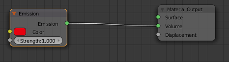 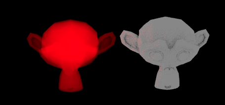 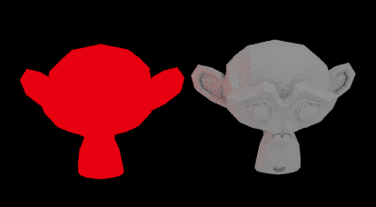 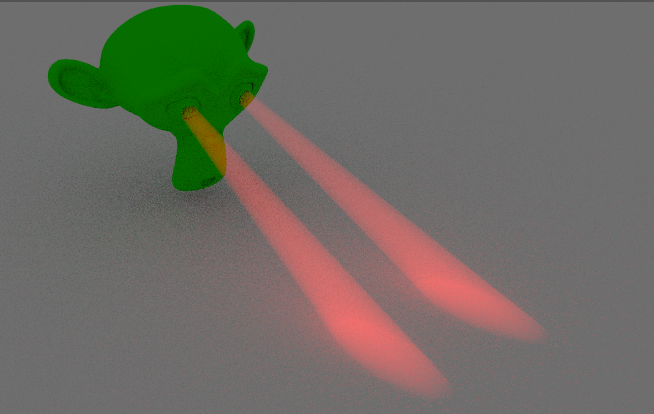Este nó permite que o volume de uma malha possa absorver parte da luz que atravessa o volume. Especialmente útil para configuração de vidros, especialmente os coloridos, efeitos fantasmagóricos e fumo escuro.
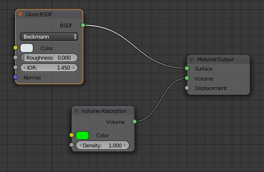 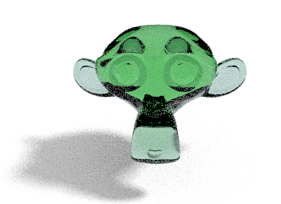 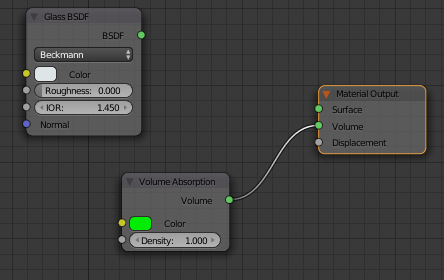 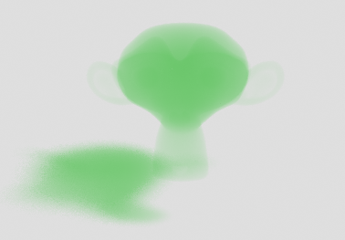Este nó permite ainda criar um efeito de nevoeiro (mist) quando conectado ao Volume do Background. Controla a intensidade com o valor Density e tem de ter uma fonte de luz (mesh com emission, lamps) para além do Background/World.
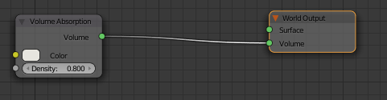 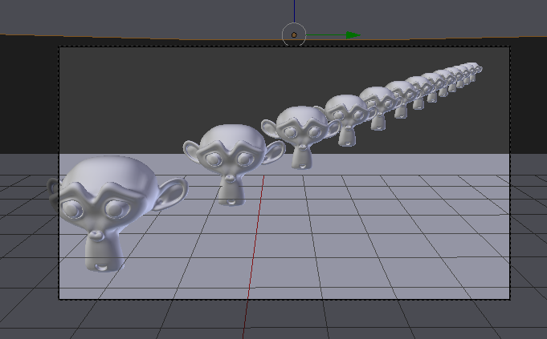 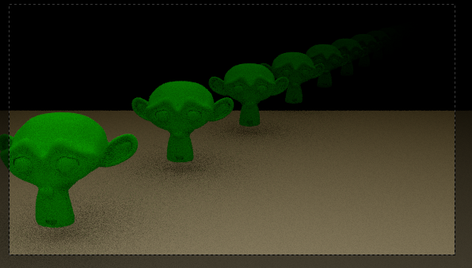É possível criar o efeito com uma malha. Por exemplo, pode inserir a sua cena dentro de um cubo e depois configurar o material do cubo conectando o Volume Absorption ao Volume do Material Outoput.
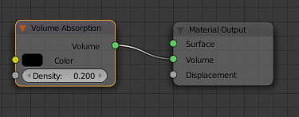Este nó permite configurar a dispersão da luz. Pode ser conectado nos encaixes Volume do Material Output ou do World Output. É especialmente útil para criar “luzes volumétricas” (cones de luz), fumo branco ou nuvens.
Criámos uma cena com um plano (utilizámos o Proportional Edit para criar as "montanhas"), um cubo, câmara e luz Spot.
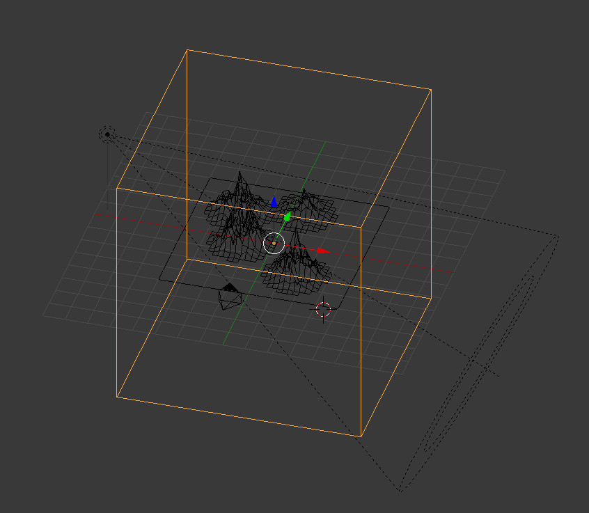A câmara tem de ficar no exterior do cubo. O cubo vai servir para delimitar a área com densidade, a área onde o Volume Scatter irá ser utilizado. Na imagem é visível que a lâmpada Spot também está localizada fora do cubo mas não é obrigatório, foi apenas a nossa opção.
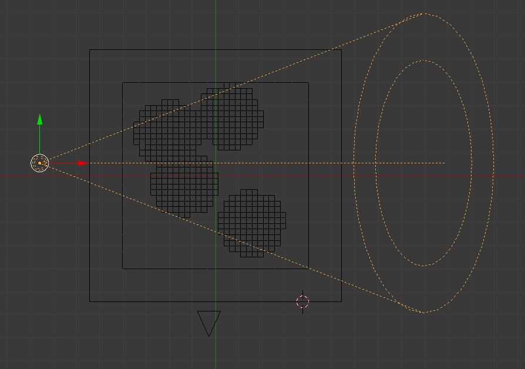 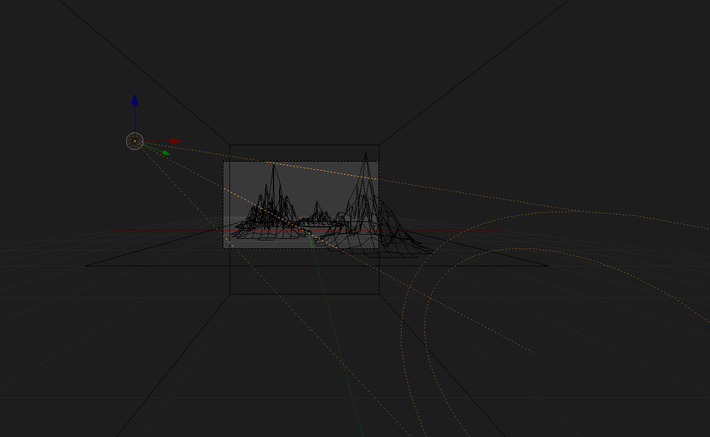A Spot está configurada de forma simples. Destaca-se apenas a Strength.
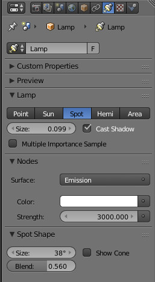O cubo tem um material simples configurado como na imagem abaixo. Repare que reduzimos a Density.
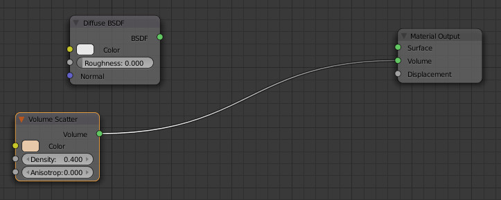 Exemplos de render (Preview) com e sem o cubo. A única diferença entre as duas imagens é que na segunda a layer onde está o cubo foi desativada. Na primeira imagem, é visível o "cone de luz" da lâmpada Spot e que este apenas é visível dentro do cubo. 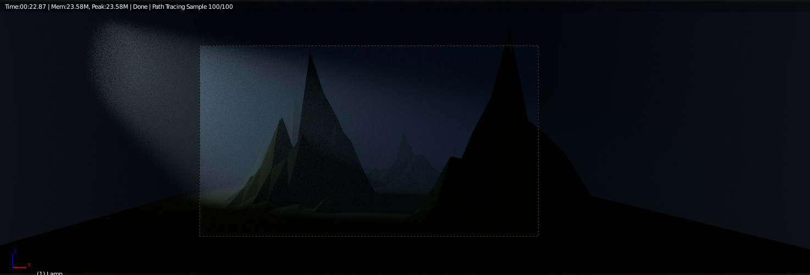 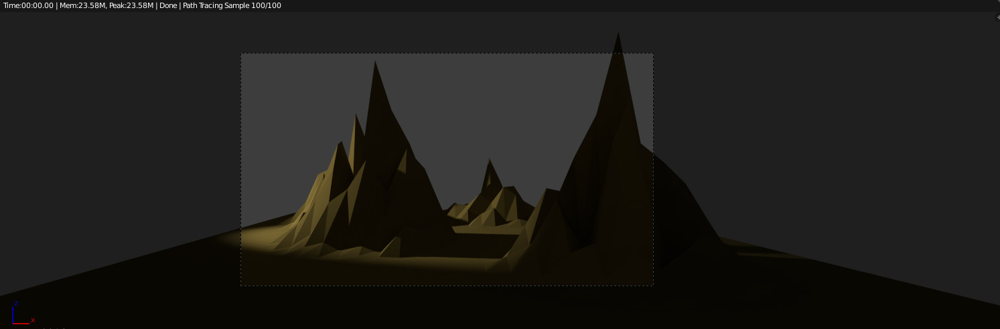Na cena abaixo, utilizámos a mesma cena mas apagámos o cubo e introduzimos o Volume Scatter no nó World Output.
Repare que também utilizámos um valor menos elevado para a Density.
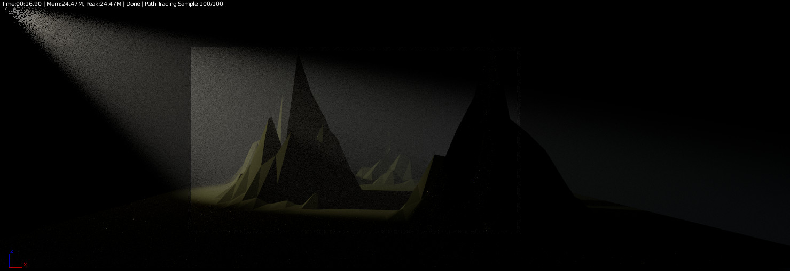 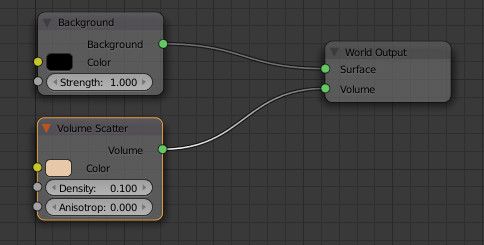Como o Volume Scatter está a ser utilizado em todo o World, poderá ser útil ativar a opção Homogeneous para acelerar a renderização.
Homogeneous significa que o Blender vai tratar o World como tendo a mesma densidade (densidade constante).
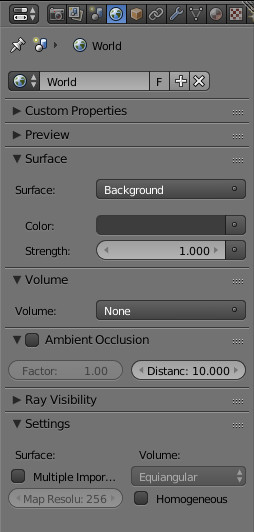Se está interessado neste efeito, recomenda-se a consulta do texto God rays.